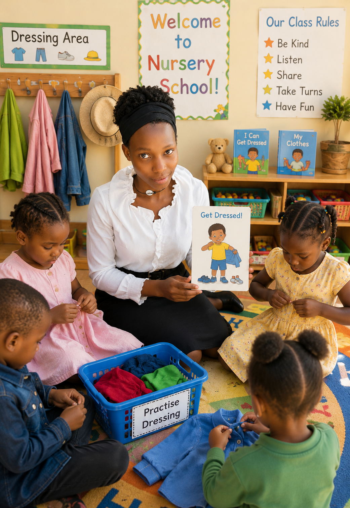

Five Ways to Calm a Morning Tantrum
Drop-off tears are normal — here's what actually helps in the first five minutes.
Read post →I'm Maria — a nursery school teacher sharing what years in the classroom have taught me about raising, teaching, and understanding little ones.

Drop-off tears are normal — here's what actually helps in the first five minutes.
Read post →Every block tower and puddle jump is doing more than you think.
Read post →From morning circle to home-time — what a real nursery day looks like.
Read post →I've spent years in nursery classrooms watching children take their very first steps toward reading, sharing, and understanding the world. This blog is where I write it all down — for parents, for fellow teachers, and for anyone who loves watching small people grow.
I trained as an early childhood educator because I loved how honest young children are — with their feelings, their curiosity, and their questions. Every year in the classroom has taught me something new about patience and play.
Children don't need to be rushed to grow up. They need safe spaces, consistent routines, and adults who take their world seriously — even when it's made of blocks and crayons.
Drop-off tears are normal. Here are the small, steady things that actually help in the first five minutes of the school day.
Drop-off tears are normal, and they usually fade faster than parents expect. What helps most: a calm, predictable goodbye ritual; letting the child carry something familiar from home; naming the feeling out loud instead of rushing past it; giving a specific time they'll see their parent again ("after snack time"); and staying warm but brief at the door, since long goodbyes often stretch out the tears rather than ease them.
Every block tower, puddle jump, and pretend tea party is quietly building focus, language, and confidence.
Every block tower, puddle jump, and pretend tea party is doing more work than it looks like. Stacking blocks builds fine motor control and early maths thinking. Pretend play builds vocabulary and turn-taking. Even "messy" outdoor play teaches balance and problem-solving. My rule in class: if a child is deeply focused, I don't interrupt — that focus is the actual lesson.
From morning circle to home-time — a real look at how a nursery day actually unfolds, mess and all.
Mornings start with a circle: songs, a weather chat, and a look at what's planned for the day. Then we move into activity stations — building, drawing, sand and water play — before a snack break. Afternoons are quieter: storytime, rest, and free play. The "mess" in between is where most of the actual learning happens.
There's no single right age — here's what I actually look for before introducing letters.
There's no single right age for this. Before letters, I look for three things: can the child hold a crayon with some control, can they copy a simple shape like a circle or cross, and do they show interest on their own? Pushing letters too early, before the hand and interest are ready, usually creates frustration rather than progress.
Patience is a skill, not a personality trait. Here's how I built mine.
Patience is a skill, not a personality trait — and I had to build mine on the job. The biggest shift for me was learning to slow down my own reactions before reacting to a child's. A tantrum, a spill, a refusal to nap: none of it is personal, and once I stopped treating it that way, the whole classroom felt calmer, including me.
The same consistency that works in my classroom can work at home too — with a few small changes.
The same consistency that works in my classroom works at home too. Keep the order of steps identical every night — bath, story, lights out — so the child's body learns to expect sleep before you even say it's time. Avoid introducing anything new (a toy, a screen) in that last half hour, since novelty is the enemy of winding down.
I believe in patient, playful, and personal teaching. That's the spirit behind everything I write here.
Get in touchQuestions about the blog, collaboration ideas, or just want to share your own classroom story? I'd love to hear from you.